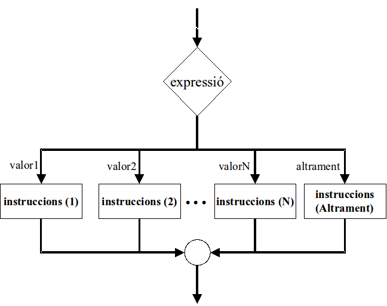

Alternativa múltiple¶
Quan l’alternativa múltiple correspon a la comprovació dels diferents valors d’una mateixa expressió, ens trobem amb quelcom similar a:
Si «expressio» == «val1» Llavors
«instruccions 1»
Sinó Si «expressio» == «val2» Llavors
«instruccions 2»
«...»
Sinó Si «expressio» == «valN» Llavors
«instruccions N»
Sinó
«instruccions altrament»
Aquesta estructura es podria dibuixar en un diagrama de flux de la següent manera
Fixa’t que l’aspecte del diagrama és lleugerament diferent al que sortiria si apliquéssim l’esquema que havíem vist fins ara. Aquest surt més… ample i curt!
Alguns llenguatges permeten compactar aquest tipus de situacions amb una altra estructura de selecció.
En pseudocodi tindríem:
Cas «expressió» sigui
val1: «instruccions 1»
val2: «instruccions 2»
...
valN: «instruccions N»
Altrament
«instruccions altrament»
Fcas
En el lloc dels valors, hi podem col·locar rangs de valors i fins i tot operadors, per exemple:
Cas nombredefills sigui
< 0: escriu "error, no pots tenir menys que 0 fills!"
0: escriu "tot el que t'has estalviat en bolquers!"
1: escriu "compte de no mimar-lo massa!"
>1 AND <5: escriu "no t'avorreixes a casa eh?"
> 4: escriu "tu sí fas país!"
Cal tenir en comptes que aquesta estructura s’executa des de la primera a la darrera condició. D’aquesta manera, tot i que s’acompleixi més d’un cas, només s’executarà el primer. Ex:
Cas n sigui
== 0: escriure “n == 0”
>=0 and <=10: escriure “0<= n <=10”
>= 10: escriure “n >=10”
FCas
A l’exemple, quan n val 0 podria entrar al primer i al segon cas. Només ho farà al primer, però.
Java ens ofereix una versió particular d’aquest, amb l’estructura
switch
switch («expressio») {
case val1: «instruccions 1»; break;
case val2: «instruccions 2»; break;
...
case valN: «instruccions N»; break;
default: «instruccions altrament»
}
Python no ofereix aquesta estructura i haurem de fer servir el niament múltiple per resoldre aquest tipus de situacions.